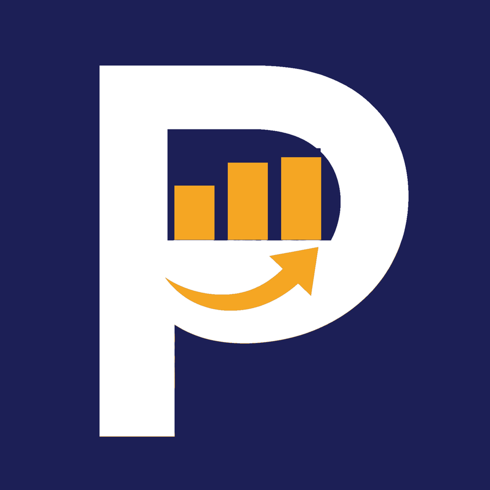

PETO FinanzasInicio › Recursos
Estos son los servicios que uso con mi propio dinero y que menciono en el podcast y en los videos de PETO Finanzas. Si te registras desde estos enlaces, puede que recibas un bono de bienvenida — y a mí me apoyas sin que te cueste nada extra.
Algunos enlaces de esta página son enlaces de afiliado. Eso significa que si te registras, abres una cuenta o compras un producto a través de ellos, PETO Finanzas puede recibir una comisión o un bono de referido pagado por la compañía, sin ningún costo adicional para ti. En algunos casos tú también recibes un bono de bienvenida, y cuando eso pasa lo indico junto al enlace.
Esta divulgación se hace conforme a las guías de la Comisión Federal de Comercio de EE. UU. (FTC, 16 CFR Parte 255).
Mi compromiso: solo recomiendo productos que uso personalmente o que revisé con cuidado. La comisión nunca cambia mi opinión, y si un producto deja de convencerme, sale de esta página. Los bonos, tasas y condiciones los fija cada compañía y pueden cambiar sin aviso; verifica siempre los términos vigentes en el sitio oficial antes de registrarte.
Nada en esta página ni en mi contenido es asesoría financiera, legal o de impuestos. Tu situación es tuya: si necesitas decisiones grandes, consulta a un profesional.
Es la cuenta que uso para mi dinero del día a día, y la que se sincroniza con PETO Finanzas. Con mi enlace, SoFi ofrece bonos de bienvenida de hasta $325 según el depósito, y $50 extra con SoFi Plus, según sus términos vigentes al registrarte.
Abrir mi cuenta en SoFiEnlace de referido: tú recibes el bono de bienvenida y yo recibo un bono de referido.
Lo uso cada mes para enviar dinero a mi familia: llega rápido y sin las comisiones de antes. Con mi código recibes $20 de crédito en tu primera transferencia.
Código: 8WZQ5
Enviar dinero con SendwaveEnlace de referido: tú recibes el crédito de $20 y yo recibo crédito para mis envíos.
Soy embajador oficial de Remitly (#Ad #RemitlyAmbassador). Si eres cliente nuevo, usa mi código al registrarte y recibes $20 de descuento en tu primer envío de $40 o más.
Código: AMBTYJP
Enviar dinero con RemitlyRelación pagada: tú recibes el descuento de $20 y yo recibo una comisión por cada cliente nuevo que completa su primer envío.
Un correo corto cada semana: una idea clara de finanzas personales para hispanos en Estados Unidos y una acción que puedes hacer en menos de 20 minutos. Gratis.
Suscribirme gratisSolo entra aquí lo que uso de verdad. Escucha el podcast «Finanzas Personales» en Spotify y mira los videos en YouTube para ver cómo uso cada herramienta con números reales.